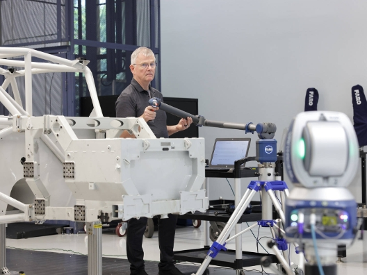

Laser Tracker와 ScanArm을 결합해 대형 측정과 세부 검사를 하나의 좌표계에서 수행하는 통합 계측 솔루션

Integrated Large-Volume Measurement System
Super 6DoF TrackArm은 FARO Vantage Laser Tracker와 하나 이상의 FARO ScanArm을 하나의 측정 시스템으로 구성한 통합 3D 계측 솔루션입니다.
Laser Tracker는 넓은 공간에서 대형 구조물의 기준 좌표와 전체 위치를 측정하고, ScanArm은 작업자가 대상 주변을 이동하며 구멍, 모서리, 내부 형상과 복잡한 곡면을 접촉식 프로빙 또는 비접촉식 레이저 스캐닝으로 검사합니다.
Laser Tracker만으로는 측정하기 어려운 세부 형상과, ScanArm 단독으로는 범위가 부족한 대형 구조물을 하나의 좌표계에서 연속적으로 검사할 수 있습니다.
Vantage Laser Tracker로 대형 구조물과 조립체의 전체 기준 좌표, 위치와 정렬 상태를 넓은 범위에서 측정합니다.
ScanArm을 이용해 구멍, 모서리, 내부 구조와 복잡한 곡면 등 가까이 접근해야 하는 형상을 검사합니다.
여러 위치에서 취득한 Laser Tracker와 ScanArm의 측정 데이터를 하나의 공통 좌표계에서 관리합니다.
작업자가 ScanArm을 들고 대상 주변을 이동하며 트래커가 직접 보기 어려운 영역까지 측정할 수 있습니다.
측정 대상과 검사 목적에 따라 Vantage Laser Tracker, ScanArm, 프로브와 계측 소프트웨어를 조합해 구성합니다.
넓은 측정 공간의 기준 좌표를 설정하고 대형 구조물의 전체 위치와 정렬 상태를 측정합니다.
02대상 주변을 이동하며 접촉식 프로빙과 비접촉식 레이저 스캐닝으로 세부 형상을 측정합니다.
Tracker와 ScanArm 데이터를 하나의 좌표계로 연결해 대형 제품의 전체와 세부 영역을 연속적으로 검사합니다.
측정 데이터를 CAD와 비교하고 편차 분석, 조립·정렬 및 품질 검증에 활용합니다.
단일 측정 장비만으로 전체 작업을 수행하기 어려운 대형·복합 형상 검사에 활용할 수 있습니다.
자동차 차체, 항공기 구조물, 선박 블록과 같이 하나의 Arm 측정 범위를 넘어서는 대형 대상을 검사할 때 적합합니다.
내부 형상, 숨겨진 영역과 복잡한 곡면처럼 Laser Tracker의 SMR만으로 검사하기 어려운 부분을 측정할 수 있습니다.
기준점과 주요 치수는 접촉식으로 측정하고, 전체 표면과 자유곡면은 레이저로 스캔할 수 있습니다.
장비를 이동하거나 여러 위치에서 측정하더라도 전체 데이터를 공통 좌표계에서 비교하고 분석할 수 있습니다.
대형 좌표 측정과 세부 형상 검사를 통합해 현장 측정의 범위와 유연성을 확장합니다.
접촉식 프로브와 레이저 스캐너를 활용해 기준점, 치수와 전체 표면 형상을 함께 측정합니다.
공식 시스템 구성과 작업 조건에 따라 가시선이 확보되지 않는 영역에서도 최대 60m 범위까지 프로빙과 스캐닝을 지원합니다.
프로젝트 조건에 따라 하나 이상의 ScanArm을 Vantage Max와 연결해 통합 측정 환경을 구성할 수 있습니다.
통합된 측정 데이터를 CAD 설계 모델과 비교하여 형상, 위치와 조립 상태의 편차를 분석합니다.
대형 측정 범위와 세부 형상 검사가 동시에 필요한 다양한 제조 및 조립 환경에 활용합니다.
자동차 차체와 대형 조립체의 전체 위치, 내부 형상과 세부 부품을 하나의 좌표계에서 검사합니다.
항공기 동체, 날개와 대형 구조물의 조립 정렬 상태와 복잡한 형상을 검증합니다.
선박 블록과 해양 구조물의 대형 좌표 측정과 내부 및 접근이 어려운 부분의 검사를 수행합니다.
중장비와 대형 기계 조립품의 전체 위치와 세부 가공 형상을 검사합니다.
대형 금형, 지그와 치공구의 전체 위치 및 접근하기 어려운 형상을 CAD 모델과 비교합니다.
생산설비와 자동화 라인의 설치 위치, 정렬 및 세부 구조를 통합 좌표계에서 검증합니다.
아래 내용은 일반적인 활용 예이며, 측정 대상과 프로젝트 조건에 따라 필요한 장비와 소프트웨어를 선택적으로 구성할 수 있습니다.
Vantage Laser Tracker로 전체 기준 좌표와 위치 측정
ScanArm으로 접근이 어려운 영역의 세부 형상 측정
통합 데이터를 CAD와 비교하고 치수와 형상 편차 분석
04필요에 따라 대형 조립체의 정렬과 공정 검증으로 확장
전체 위치와 세부 형상 검사 결과를 통합해 품질 검증
측정 대상의 크기와 형상, 작업 범위, 필요한 접촉식 프로빙과 레이저 스캐닝 방식에 맞는 Vantage 및 ScanArm 시스템 구성을 안내해 드립니다.
제품 문의하기 →